<div class="column left-column">
    <div class="mb-4">
        {% include business-card.html %}
    </div>
    {% for testimony in site.data.burnout.testimonies %}
    <div class="d-flex flex-row align-items-center mb-3">
        
        <div class="h2 my-0">
            <a href="{{ testimony.path }}" class="text-underline">
                Témoignage {{ forloop.index }}
            </a>
            <p class="my-1">{{ testimony.title }}</p>
        </div>
    </div>
    {% endfor %}
</div>

<div class="column right-column">
    <div class="d-flex flex-row justify-content-end align-items-center">
        <a href="{{ page.slack_url }}">
            <div class="rounded bg-white mr-3 p-1">
                
            </div>
        </a>
        <p class="h3 my-0">
            Rejoignez <a href="{{ page.slack_url }}">le Slack</a> pour parler de votre expérience.
        </p>
    </div>
    {% include illustration.html %}
</div>
